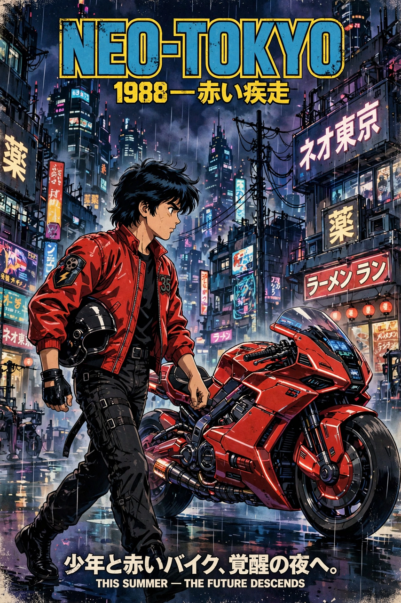

| Akira | |
|---|---|
 Japanese theatrical release poster | |
| Directed by | Katsuhiro Otomo |
| Based on | Akira (manga) by Katsuhiro Otomo |
| Music by | Shoji Yamashiro (Geinoh Yamashirogumi) |
| Release date | 16 July 1988 (Japan) |
| Running time | 124 minutes |
| Budget | c. ¥700 million–1.1 billion (among the most expensive anime of its era) |
Akira (Japanese: アキラ) is a 1988 Japanese animated cyberpunk action film directed by Katsuhiro Otomo, produced by Ryōhei Suzuki and Shunzō Katō, and written by Otomo and Izo Hashimoto, based on Otomo's 1982 manga of the same name. Set in a dystopian 2019 "Neo-Tokyo," the film follows biker gang leader Shōtarō Kaneda and his friend Tetsuo Shima, who acquires uncontrollable psychic powers after a motorcycle accident, drawing the military into a confrontation over the secret of Akira — the psychic child whose power destroyed Tokyo in 1988.
Thirty-one years after a mysterious explosion destroys Tokyo and triggers World War III, Neo-Tokyo is a violent, corrupt metropolis of riots, terrorism, and biker gangs. During a gang fight, Tetsuo crashes into Takashi, a wrinkled, child-like esper escaped from a government laboratory. Tetsuo is taken by the military and found to possess latent psychic abilities rivaling Akira's. As his powers explode beyond his control — warping his body into a grotesque mass — Colonel Shikishima and the scientist Dr. Ōnishi struggle to contain him, while Kaneda, resistance fighter Kei, and the espers Kiyoko, Takashi, and Masaru race to stop an apocalypse. Tetsuo awakens Akira's preserved remains; the espers intervene, and Akira creates a new universe to absorb Tetsuo, leaving Kei, Kaneda, and Kai amid the ruins as Tetsuo's voice declares, "I am Tetsuo."
The film was a landmark of animation craft: over 160,000 cels, 2,212 shots, and 327 colors (including 50 created for the film), with pre-recorded dialogue shaping lip movement — unusual for anime — and a soundtrack by Geinoh Yamashirogumi blending gamelan, noh, and progressive rock. Released while Otomo's manga was still running, the film compresses and alters the story, inventing its own ending.
Akira is credited with popularizing anime in the Western world in the early 1990s and is routinely ranked among the greatest animated and science fiction films ever made. Its imagery — Kaneda's red motorcycle slide, the stadium finale — is endlessly quoted, from The Matrix to music videos; its depiction of a 2020 Tokyo Olympics in a 2019 setting became a famous coincidence during the real (postponed) Tokyo Games. Together with Ghost in the Shell (1995), it defines the international image of cyberpunk anime, a genre whose literary roots reach back to Neuromancer.